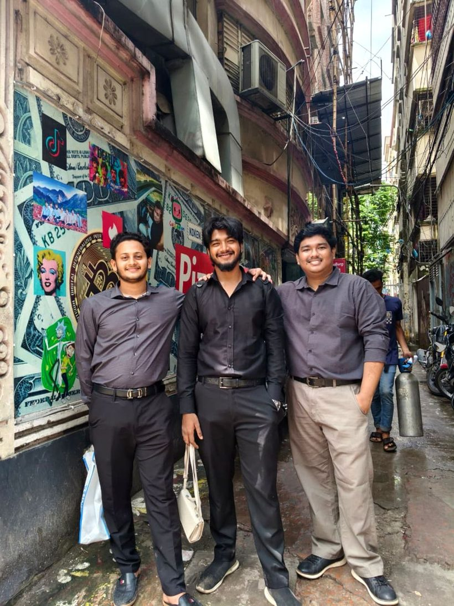

Case File Open
Corporate Social
Responsibility at
PizzaBurg
A Business Ethics case review — Group NEXIX, Bangladesh University.
Aditya Tripura · Shuvo Chandra Roy · Asiful Islam Sourov
Raiyan Ahmed Ratul · Fabliha Mubarrat Kabir · Liya Akter
Raiyan Ahmed Ratul · Fabliha Mubarrat Kabir · Liya Akter
02 — Group NEXIX
The Team
Aditya TripuraID 202511170006
Shuvo Chandra RoyID 202511170023
Asiful Islam SourovID 202511170026
Raiyan Ahmed RatulID 202511170047
Fabliha Mubarrat KabirID 202511170060
Liya AkterID 202511170072


Nexix Field Team — Site Visit, PizzaBurg
03 — Company & Framework
PizzaBurg, and what CSR means
2018
Founded
22
Outlets
~1,000
Employees
4,000+
Pizzas / day
Be profitable
Obey the law
Do right beyond what's required
Contribute to the community

05 — Existing Practice
Community & philanthropy
Strength
Ramadan — PizzaBurg has provided pizzas to mosques for iftar, reported by Dhaka Tribune.
Christmas — employees dress as Santa Claus and distribute free pizzas to disadvantaged children, reported by Dhaka Tribune.
Reading: both fall under Carroll's philanthropic responsibility — voluntary contributions tied to a specific occasion.

Illustrative — Community Distribution

Illustrative — Food Redistribution Partnership
11 — Suggestion 04 / 04
Recommended
Food Rescue Program
Donate unsold, still-safe food at day's end to shelters instead of discarding it.
CostNear-zero — this is food otherwise discarded, not new inventory purchased for donation
BenefitLower disposal costs, a strong reputational story, a small reduction in food waste
Operational noteRequires a basic food-safety handoff protocol — clear cut-off times and a documented chain of custody
Case File Closed
“PizzaBurg already contributes to society through community support and special-day initiatives. We suggest four new CSR activities: Buy 1 Give 1, Green PizzaBurg, Student Support, and Food Rescue. These initiatives can benefit both society and the environment.”
Thank You — Questions?